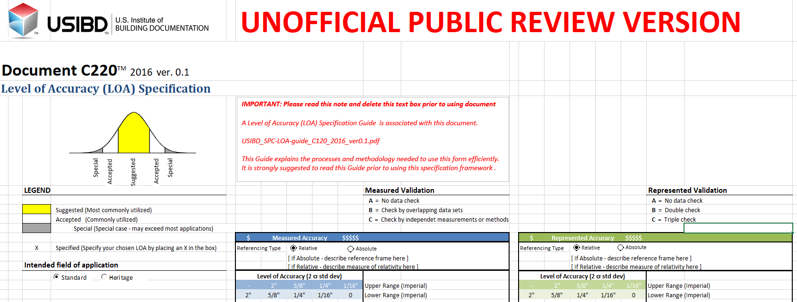
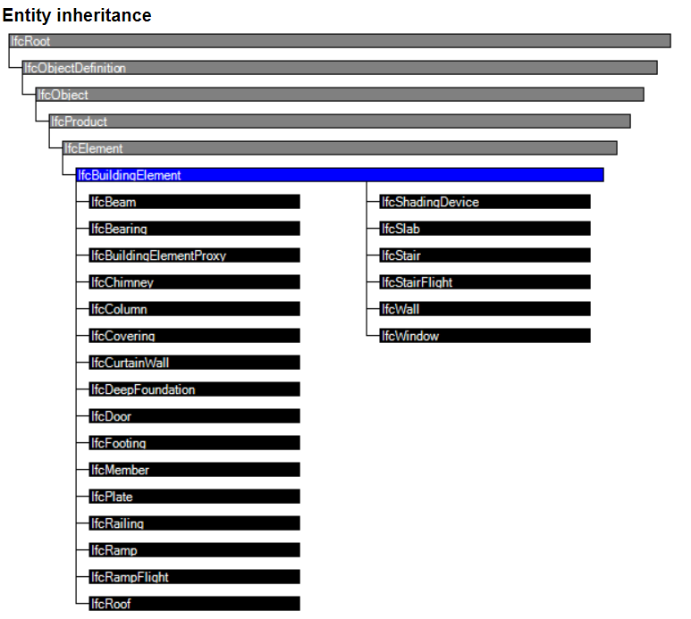
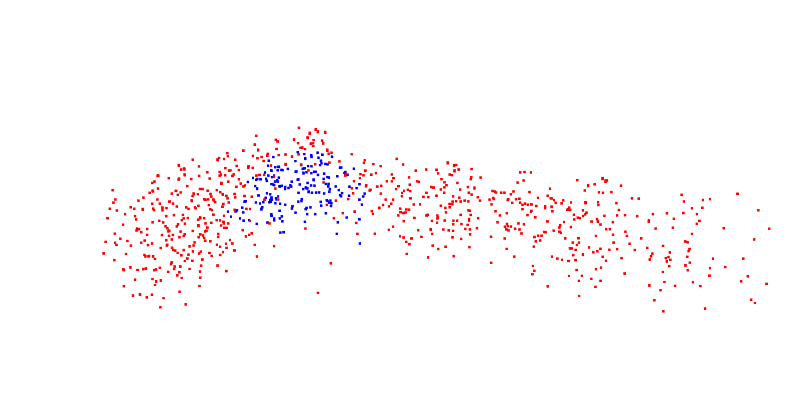
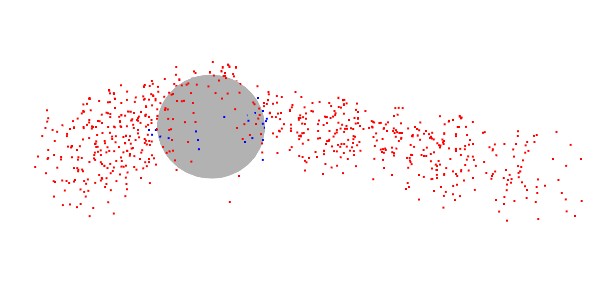
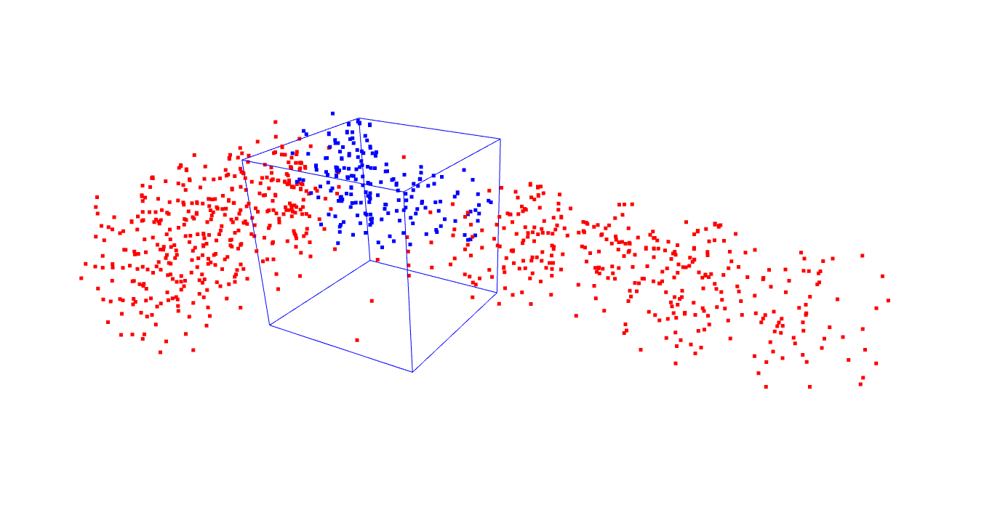
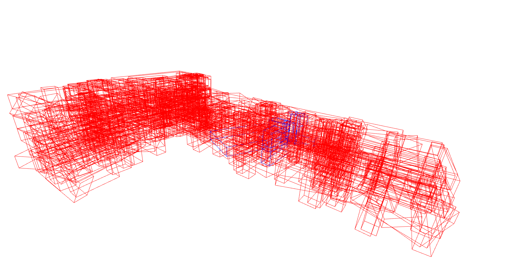
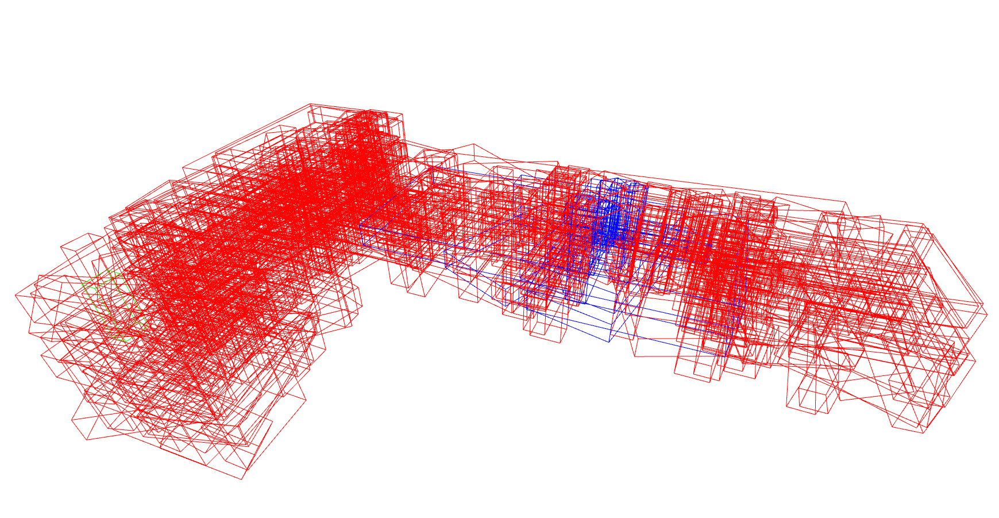
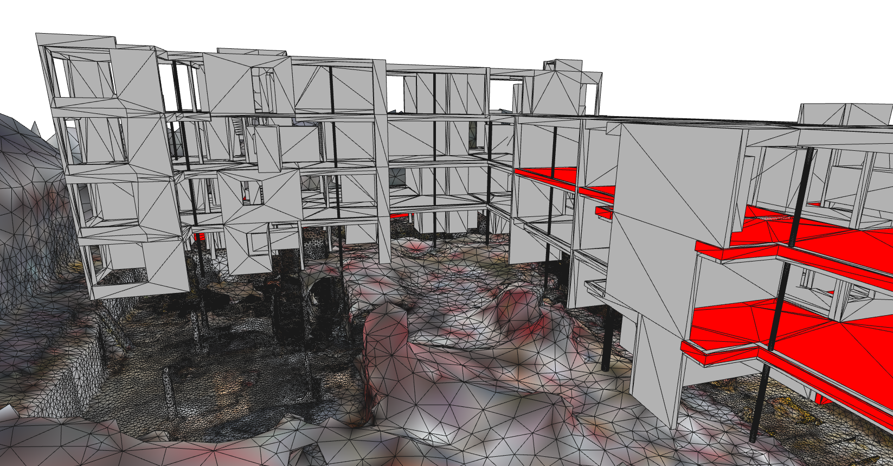

geomapi.tools
- geomapi.tools.alignmenttools
- geomapi.tools.alignmenttools.match
- geomapi.tools.alignmenttools.params
find_close_sessions()get_weighted_pose()estimate_session_position()
- geomapi.tools.combinationtools
- geomapi.tools.inspectiontools
- geomapi.tools.machinelearningtools
- geomapi.tools.progresstools
create_voxel_block_grid_and_raytrace()subdivide_pcd_per_box()subdivide_pcd_per_octree()pcd_to_octree()capture_image_and_depth_viewer()assign_point_cloud_information()filter_img_classifcation_by_neighbors()remap_color_images_to_masks()project_meshes_to_rgbd_images()project_pcd_to_rgbd_images()get_average_cartesian_transform_ortho()create_xy_grids()volume_mesh_BIM()volume_theoretical_BIM()calculate_completion()color_BIMNode()remove_edges_volume_calculation()color_pointcloud_by_height()create_xy_grid()get_mesh_intersections()get_bim_intersections()get_mesh_intersectionsBIM()get_scene_intersections()get_rays_raycast()get_mesh_intersection_with_grid()get_top_lineset_from_meshes()determine_percentage_of_coverage()
- geomapi.tools.validationtools
decode_depthmap()navvis_csv_to_nodes()get_boundingbox_of_list_of_geometries()match_BIM_points()compute_LOA()plot_histogram()color_point_cloud_by_LOA()color_point_cloud_by_distance()csv_by_LOA()excel_by_LOA()color_BIMNode()cad_show_lines()sample_pcd_from_linesets()get_linesets_inliers_in_box()create_selection_box_from_image_boundary_points()
Different tools to Manage RDF data.
- geomapi.tools.e57xml_to_nodes(path: str, **kwargs) List[PointCloudNode]
Parse XML file that is created with E57lib e57xmldump.exe.
- Args:
path (string): e57 xml file path e.g. “D:Data2018-06 Werfopvolging Academiestraat Gentweek 22PCDweek 22 lidar_CC.xml”
- Returns:
A list of pointcloudnodes with the xml metadata
- geomapi.tools.img_xml_to_nodes(path: str, skip: int = None, filterByFolder: bool = False, **kwargs) List[ImageNode]
Parse XML file that is created with https://www.agisoft.com/.
- Args:
1.xmlPath (string or Path): xml file path e.g. “D:/Data/cameras.xml” 2.skip (int, Optional): select every nth image from the xml. Defaults to None. 3.filterByFolder (bool, Optional): Filter imgNodes based on the images in the folder or not. Defaults to False.
- Returns:
A list of ImageNodes with the xml metadata
- geomapi.tools.e57path_to_nodes(path: str, percentage: float = 1.0) List[PointCloudNode]
Load an e57 file and convert all data to a list of PointCloudNodes.
NOTE: lowering the percentage barely affects assignment performance (numpy array assignments are extremely efficient).
Only do this to lower computational complexity or free up memory.
- Args:
e57path(str): absolute path to .e57 file
percentage(float,optional): percentage of points to load. Defaults to 1.0 (100%)
- Returns:
o3d.geometry.PointCloud
- geomapi.tools.e57path_to_nodes_mutiprocessing(path: str, percentage: float = 1.0) List[PointCloudNode]
Load an e57 file and convert all data to a list of PointCloudNodes.
NOTE: Complex types cannot be pickled (serialized) by Windows. Therefore, a two step parsing is used where e57 data is first loaded as np.arrays with multi-processing. Next, the arrays are passed to o3d.geometry.PointClouds outside of the loop.
NOTE: starting parallel processing takes a bit of time. This method will start to outperform single-core import from 3+ pointclouds.
NOTE: lowering the percentage barely affects assignment performance (numpy array assignments are extremely efficient).
Only do this to lower computational complexity or free up memory.
- Args:
e57path(str): absolute path to .e57 file
percentage(float,optional): percentage of points to load. Defaults to 1.0 (100%)
- Returns:
o3d.geometry.PointCloud
- geomapi.tools.e57header_to_nodes(path: str, **kwargs) List[PointCloudNode]
Parse e57 file header that is created with E57lib e57xmldump.exe.
- Args:
path (string): e57 xml file path e.g. “D:Data2018-06 Werfopvolging Academiestraat Gentweek 22PCDweek 22 lidar_CC.xml”
- Returns:
A list of pointcloudnodes with the xml metadata
- geomapi.tools.get_loaclasses_from_ifcclass(ifcClass: str) rdflib.URIRef
Return the matching LOA class given a ifcClass e.g. IfcWall -> URIRef(’https://B2010_EXTERIOR_WALLS’). The returned subjects can be used to retreive the LOAm and LOAr values from the LOA graph.
- Args:
ifcClass (str): class names e.g. IfcWall
- Returns:
URIRef: subjects of LOA graph
- geomapi.tools.get_ifcclasses_from_loaclass(loaClass: str) rdflib.Literal
_summary_
- Args:
loaClass (str): _description_
- Returns:
Literal: _description_
- geomapi.tools.create_default_loa_graph(path: str = None) rdflib.Graph
Generates a Graph from the default USIBD_SPC-LOA_C220_2016_ver0_1 specification. This specification contains information on the accuraycy of building documentation and representation.
Example:
<https://A1010_STANDARD_FOUNDATIONS> a “LOA” ;
ifc:classes “[‘IfcFooting’, ‘IfcPile’, ‘IfcPlate’]” ;
loa:CSI “A1010” ;
loa:LOAm 10 ;
loa:LOAr 20 ;
loa:validation “B” .
More documentation can be found on https://docplayer.net/131921614-Usibd-level-of-accuracy-loa-specification-guide.html# on how to use this specification.
- Args:
path (str, optional): path to CSV with USIBD values
- Returns:
Graph: graph with serialized accuracies, to be used in validation procedures
- geomapi.tools.parse_loa_excel(path: str) rdflib.Graph
Parse an USIBD_SPC-LOA_C220_2016_ver0_1.xlsx spreadsheet that contains meaured/represented accuracy parameters for building documentation procedures. The returned graph can be used by GEOMAPI or other linked data processes to validate remote sensing/BIM models.
More documentation can be found on https://docplayer.net/131921614-Usibd-level-of-accuracy-loa-specification-guide.html# on how to use this specification. If no excel is presented, a graph with standard values will be obtained.

- Args:
excelPath (str): file path to the spreadsheet
- Returns:
Graph: graph
- geomapi.tools.get_loa_class_per_bimnode(BIMNodes: List[BIMNode], path: str = None)
Assigns the accuracy properties of an LOA Excel spreadsheet to the list of BIMNodes. The assignment is based on the ifc classNames which are mapped to LOA classes.
- Features:
LOAm (measured accuracy)
LOAr (represented accuracy)
validation (A, B or C)
- Args:
BIMNodes (List[BIMNode]): List of nodes to assign the propteries to. path (str, optional): Path to Excel spreadsheet. If None, the default LOA properties are assigned.
- geomapi.tools.ifc_to_nodes(path: str, classes: str = 'IfcBuildingElement', getResource: bool = True, **kwargs) List[BIMNode]
Parse ifc file to a list of BIMNodes, one for each ifcElement.
NOTE: classes are not case sensitive. It is advised to solely focus on IfcBuildingElement classes or inherited classes as these typically have geometry representations that can be used by GEOMAPI.
NOTE: If you intend to parse 1000+ elements, use the multithreading of the entire file instead and filter the BIMNodes afterwards as it will be faster.
WARNING: IfcOpenShell strugles with some ifc serializations. In our experience, IFC4 serializations is more robust.

- Args:
ifcPath (string): absolute ifc file path e.g. “D:/myifc.ifc”
classes (string, optional): ifcClasses e.g. ‘IfcBeam, IfcColumn, IfcWall, IfcSlab’. Defaults to ‘IfcBuildingElement’.
- Raises:
ValueError: ‘No valid ifcPath.’
- Returns:
List[BIMNode]
- geomapi.tools.ifc_to_nodes_by_guids(path: str, guids: list, getResource: bool = True, **kwargs) List[BIMNode]
Parse ifc file to a list of BIMNodes, one for each ifcElement.
- Args:
ifcPath (string): absolute ifc file path e.g. “D:myifc.ifc”
guids (list of strings): IFC guids you want to parse e.g. [‘’3saOMnutrFHPtEwspUjESB’’,’’3saOMnutrFHPtEwspUjESB’].
- Returns:
List[BIMNode]
- geomapi.tools.ifc_to_nodes_by_type(path: str, types: list = ['IfcBuildingElement'], getResource: bool = True, **kwargs) List[BIMNode]
Parse ifc file to a list of BIMNodes, one for each ifcElement.
NOTE: classes are not case sensitive. It is advised to solely focus on IfcBuildingElement classes or inherited classes as these typically have geometry representations that can be used by GEOMAPI.
WARNING: IfcOpenShell strugles with some ifc serializations. In our experience, IFC4 serializations is more robust.
- Args:
ifcPath (string): absolute ifc file path e.g. “D:myifc.ifc”
types (list of strings, optional): ifcClasses you want to parse e.g. [‘IfcWall’,’IfcSlab’,’IfcBeam’,’IfcColumn’,’IfcStair’,’IfcWindow’,’IfcDoor’]. Defaults to [‘IfcBuildingElement’].
- Raises:
ValueError: ‘No valid ifcPath.’
- Returns:
List[BIMNode]
- geomapi.tools.ifc_to_nodes_multiprocessing(path: str, **kwargs) List[BIMNode]
Returns the contents of geometry elements in an ifc file as BIMNodes.
This method is 3x faster than other parsing methods due to its multi-threading.
However, only the entire ifc can be parsed.
WARNING: IfcOpenShell strugles with some ifc serializations. In our experience, IFC4 serializations is more robust.
- Args:
ifcPath (str): path (string): absolute ifc file path e.g. “D:myifc.ifc”
- Raises:
ValueError: ‘No valid ifcPath.’
- Returns:
List[BIMNode]
- geomapi.tools.select_nodes_k_nearest_neighbors(node: Node, nodelist: List[Node], k: int = 10) Tuple[List[Node], open3d.utility.DoubleVector]
Select k nearest nodes based on Euclidean distance between centroids.

- Args:
node (Node): node to search from
nodelist (List[Node])
k (int, optional): number of neighbors. Defaults to 10.
- Returns:
List of Nodes
- geomapi.tools.create_selection_box_from_image_boundary_points(n: ImageNode, roi: Tuple[int, int, int, int], mesh: open3d.geometry.TriangleMesh, z: float = 5) open3d.geometry.OrientedBoundingBox
Create a selection box from an ImageNode, a region of interest (roi) and a mesh to raycast. A o3d.geometry.OrientedBoundingBox will be created on the location of the intersection of the rays with the mesh. The height of the box is determined by the offset of z in both positive and negative Z-direction
- Args:
n (ImageNode): Imagenode used for the raycasting (internal and external camera paramters) roi (Tuple[int,int,int,int]): region of interest (rowMin,rowMax,columnMin,columnMax) mesh (o3d.geometry.TriangleMesh): mesh used for the raycasting z (float, optional): offset in height of the bounding box. Defaults to [-5m:5m].
- Returns:
o3d.geometry.OrientedBoundingBox or None (if not all rays hit the mesh)
- geomapi.tools.select_nodes_with_centers_in_radius(node: Node, nodelist: List[Node], r: float = 0.5) Tuple[List[Node], List[float]]
Select nodes within radius of the node centroid based on Euclidean distance between node centroids.

- Args:
node (Node): node to search from
nodelist (List[Node])
r (float, optional): radius to search. Defaults to 0.5m.
- Returns:
List of Nodes, List of Distances
- geomapi.tools.select_nodes_with_centers_in_bounding_box(node: Node, nodelist: List[Node], u: float = 0.5, v: float = 0.5, w: float = 0.5) List[Node]
Select the nodes of which the center lies within the oriented Bounding Box of the source node given an offset.

- Args:
node (Node): source Node
nodelist (List[Node]): target nodelist
u (float, optional): Offset in X. Defaults to 0.5m.
v (float, optional): Offset in Y. Defaults to 0.5m.
w (float, optional): Offset in Z. Defaults to 0.5m.
- Returns:
List [Node]
- geomapi.tools.select_nodes_with_bounding_points_in_bounding_box(node: Node, nodelist: List[Node], u: float = 0.5, v: float = 0.5, w: float = 0.5) List[Node]
Select the nodes of which atleast one of the bounding points lies within the oriented Bounding Box of the source node given an offset.

- Args:
node (Node): source Node
nodelist (List[Node]): target nodelist
u (float, optional): Offset in X. Defaults to 0.5m.
v (float, optional): Offset in Y. Defaults to 0.5m.
w (float, optional): Offset in Z. Defaults to 0.5m.
- Returns:
List [Node]
- geomapi.tools.select_nodes_with_intersecting_bounding_box(node: Node, nodelist: List[Node], u: float = 0.5, v: float = 0.5, w: float = 0.5) List[Node]
Select the nodes of which the bounding boxes intersect.

- Args:
node (Node): source Node
nodelist (List[Node]): target nodelist
u (float, optional): Offset in X. Defaults to 0.5m.
v (float, optional): Offset in Y. Defaults to 0.5m.
w (float, optional): Offset in Z. Defaults to 0.5m.
- Returns:
List [Node]
- geomapi.tools.select_nodes_with_intersecting_resources(node: Node, nodelist: List[Node]) List[Node]
Select the nodes of which the o3d.geometry.TriangleMeshes intersect.
This method relies on trimesh and fcl libraries for collision detection.
For PointCloudNodes, the convex hull is used.
For ImageNodes, a virtual mesh cone is used with respect to the field of view.

- Args:
node (Node): source Node
nodelist (List[Node]): target nodelist
- Returns:
List [Node]
- geomapi.tools.get_mesh_representation(node: Node) open3d.geometry.TriangleMesh
Returns the mesh representation of a node resource
Returns the convex hull if it is a PointCloudNode.
For ImageNodes, a virtual mesh cone is used with respect to the field of view.
- Args:
Node (Node): geomapi node such as a PointCloudNode
- Returns:
o3d.geometry.TriangleMesh
- geomapi.tools.nodes_to_graph(nodelist: List[Node], path: str = None, overwrite: bool = False, save: bool = False) rdflib.Graph
Convert list of nodes to an RDF graph.
- Args:
nodelist (List[Node])
graphPath (str, optional): path that serves as the basepath for all path information in the graph. This is also the storage location of the graph.
overwrite (bool, optional): Overwrite the existing graph triples. Defaults to False.
save (bool, optional): Save the Graph to file. Defaults to False.
- Returns:
Graph
- geomapi.tools.graph_path_to_nodes(path: str, **kwargs) List[Node]
Convert a graphPath to a set of Nodes.
- Args:
graphPath (str): absolute path to .ttl RDF Graph
kwargs (Any)
- Returns:
A list of pointcloudnodes, imagenodes, meshnodes, bimnodes, orthonodes with metadata
- geomapi.tools.graph_to_nodes(graph: rdflib.Graph, **kwargs) List[Node]
Convert a graph to a set of Nodes.
- Args:
graph (RDFlib.Graph): Graph to parse
kwargs (Any)
- Returns:
A list of pointcloudnodes, imagenodes, meshnodes, bimnodes, orthonodes with metadata
- geomapi.tools.create_node(graph: rdflib.Graph = None, graphPath: str = None, subject: rdflib.URIRef = None, resource=None, **kwargs) Node
Create Node from various optional inputs i.e. graphs, graphPaths, etc.
- Args:
graph (Graph, optional): RDF Graph. path (str, optional): path to RDF graph. subject (URIRef, optional): URI subject in the graph **kwargs are forwarded to created Nodes
- Returns:
Node (PointCloudNode,MeshNode,GeometryNode,ImageNode)
- geomapi.tools.get_linked_nodes(node: Node, graph: rdflib.Graph, getResource=False, **kwargs) List[Node]
Get related nodes based on linkedNodes variable.
- Args:
node (Node): source node to evaluate.
graph (Graph): Graph that contains the linkedNodes.
getResource (bool, optional): Retrieve the reources. Defaults to False.
- Returns:
List[Node]